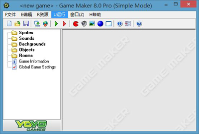

全局用户界面
当你启动Game Maker将会显示下面的界面。需要注意的是在Game Maker的右侧可能会显示一些新闻或者教程。

（事实上这是Game Maker在简单模式下的界面，如果是高级模式，还会显示一些附加项目）在左侧，可以看到在之前提到的各种资源：精灵，声音，背景，对象，房间。以及游戏信息及全局游戏设置。在顶部有熟悉的菜单和工具栏。在本章节中我们将简要介绍各个菜单项，按钮等，在后面的章节中我们会讨论一些细节。请注意，有些东西可以通过不同的操作来实现：比如选择菜单上的选项，点击一个按钮，或右键点击资源。
文件菜单
在文件菜单中，你可以找到像打开和保存文件这些常用的命令，以及其他的特殊命令：
- 新建：选择此选项创建一个新的游戏，如果当前的游戏工程正在编辑中，将会询问是否保存。
工具栏上也有一个对应的按钮。
- 打开：打开一个游戏工程。Game Maker文件的拓展名是.gmk。你也可以打开旧版本的.gm6文件（如果你想打开用gamemaker5创建的.gmd文件，必须在对话框底部选择适当的文件类型，不过用旧版本创建的游戏可能在新的版本中不能正常运行）工具栏上有一个对应的按钮。你还可以通过将文件拖动到Game Maker的窗口上来打开一个游戏。
- 最近的文件：在这个子菜单里可以重新打开你最近的游戏工程。
- 保存：覆盖保存当前的游戏工程。如果之前没有指定文件名，计算机会要求你输入要一个新文件名。当游戏文件被更改之后，你才可以使用这个菜单选项。同样在工具栏上也有一相对应的按钮。
- 另存为：使用一个不同的文件名来保存游戏工程。
你将会被要求输入一个新名称。
- 创建可执行文件：一旦你的游戏制作完成，你可能会想将它分享给别人玩。点击此选项将会创建你的游戏的单机版本。这仅仅是一个可执行文件，你可以把他给其他人玩。
- 高级模式：点击这个选项可以切换简单/高级模式。在高级模式中会有更多的选项和资源可用。
- 退出：显而易见，点击退出Game Maker
。如果你改变了当前的游戏，将会被询问是否要保存。
编辑菜单
编辑菜单包含了一些与目前选择的资源（对象，精灵，声音等）有关的命令，由于资源类型不同，一些选项可能不可用。
- 插入资源：新建一个资源实例，并弹出一个窗口供你设置资源的属性，这将在接下来的章节中详细讲解
- 复制：创建一个资源的副本，也会弹出一个窗口供你修改资源。
- 删除：删除当前所选资源（资源或组），注意，这不能被撤消，不过在你删除前会弹出一个询问框。
- 重命名：给资源一个新的名称。这也可以在资源的属性中操作，此外，你还可以选择资源然后单击名称进行更改。
- 属性：点击此选项会弹出属性编辑框。请注意，所有的窗口都是GameMaker的子窗口，你可以同时在所有窗口中进行操作。你也可以直接双击资源打开属性窗口进行编辑。
请注意，上述操作也可以通过别的方式实现，比如右键单击一个资源或资源组，便会弹出相应的菜单。
资源菜单
在此菜单中，你可以创建各种不同类型的新资源。每一个选项都有对应的工具栏按钮或快捷键，你还可以在这里更改全局游戏设置和游戏信息。
运行菜单
此菜单用于运行游戏，一共有两种方式：
- 正常运行：以正常的方式运行游戏。
游戏的运行效率最高，并且无论从外观还是行为上都和可执行文件一样。
- 调试模式执行：在调试模式下运行游戏。在这种模式下你可以检查游戏的各个方面，你可以暂停或者步进，这在出错的时候很有用，但是不容易上手/li><
/li><
/li><
/li><
/li><
/li>
当你完成你的游戏时，就可以在文件菜单下将你的游戏导出为独立的可执行文件了。
窗口菜单
在这个菜单你可以找到一些管理窗体的常用命令：
- 顺序排列：顺序排列所有打开的窗口，确保每个窗口都能够有一部分可见。
- 排列图标：排列所有最小化的窗口（这个命令对调整了Game Maker的主窗体大小的人非常有用）。
- 全部关闭：关闭所有属性窗口，询问用户是否保存更改。
帮助按钮
在这里你可以找到一些帮助选项：
- 内容：打开帮助文档。
- 教程：在右侧显示Game Maker的教程，教你如何制作自己的第一个游戏。
- 升级到专业版：你可以使用此命令来在线升级到专业版，专业版中有许多附加功能。
- 输入激活码：如果你之前购买过Game
Maker（因此，你有一个激活码或先前的购买凭证） 点击按钮Enter Activation
Code。你会被带到一个网页，在那里你可以输入你的激活码，或从前的购买凭证。
- 新闻：在这里你可以看到关于Game Maker的最新消息。
- 书籍：这个命令将打开一个网页，你可以找到有关Game Maker书的信息。
- 更多教程：打开教程网页，你可以下载更多的教程
- 网站：连接到Game Maker的网站，你可以找到关于最新版本的Game Maker软件，Game Maker资源，和精品游戏。
- 论坛：连接到论坛，你可以获得许多Game Maker用户的帮助。
- 维基：此命令将带你到Game Maker的wiki，你可以找到很多关于使用Game Maker的信息。
- 关于Game Maker：给出一些关于这个版本的Game Maker的鸡肋信息。
资源管理器
在主窗体的左边可以找到资源管理器，你可以看到你的游戏中所有资源构成的资源树，它与Windows的窗口浏览器差不多，如果不知道什么是窗口浏览器建议换系统。如果一个项目前面有一个+号，你可以点击这个+号查看资源，再次点击-号，这些资源又会隐藏。你可以选中一个资源，然后单击重命名（除了最顶层的资源组），或者双击更改属性。鼠标右击资源显示的选项与编辑菜单相同。
你可以通过拖放来改变资源位置，现在你可以将资源拖到适当的位置了。（当然，这个拖动的位置必须正确，你不可能把声音转化成精灵）